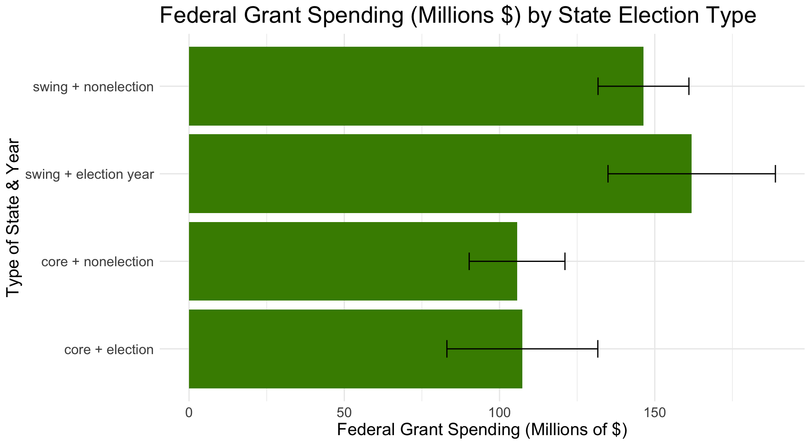
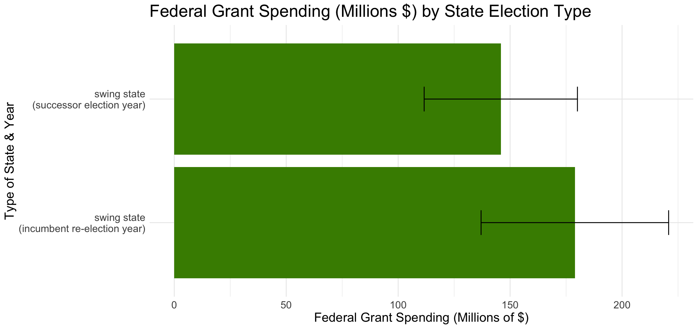

Introduction
The main question I will be answering in this blog post is the question of how we should treat the incumbency advantage in our 2024 election forecasts.
The incumbency advantage has been long documented in our history. For example, 8 out of 12 incumbent presidents have won re-election. As for the House of Representatives, about 90% of incumbents are re-elected on a bad year. If those were the odds for betting in Vegas, I would be booking my ticket there right now.
According to Alfred Cuzan and his “Five Laws of Politics,”1 however, there are two things we should pay attention to when analyzing incumbency. One, the law of incumbent advantage, which states the obvious – incumbent parties and candidates tend to have an advantage in elections. Two, the law of shrinking support – regardless of their party, support for candidates tends to diminish over their time in office. This makes sense given that elected officials are scrutinized in public more often than their relatively unknown opposers. If there were to be a recession or a scandal during their term, running for re-election may be riskier than on paper.
Another thing to consider when looking at incumbency is “pork barrel spending”. The President has the ability to direct agencies to reallocate federal aid to specific swing states or constituents, especially when there’s an election year coming up.
History of Incumbency
To start, let’s look at some statistics. There have been 11 elections with at least one incumbent running. Of those, we had 7 incumbent victories. That’s 63.64% of presidential elections where the incumbent candidate wins.
This year’s election is particularly interesting because Trump is an incumbent candidate (who has lost re-election before) and Harris is taking over for another incumbent candidate. Theoretically, Trump should do better than Harris, although he has had about the same amount (if not more) negative press than Harris due to his criminal trial. For this reason, I think the incumbency advantage doesn’t apply to Trump in this year’s election. I also don’t think Harris carries any kind of incumbent advantage because she was pretty irrelevant (and unfortunately the laughingstock of the internet) until she started running for president.
Don’t Look A Gift Pig In The Mouth
Now, let’s analyze pork barrel spending by Presidents, specifically going into election years. Using a federal grants dataset from Kriner & Reeves (2008), we can create a plot to show federal grant spending based on the type of state and year.

Based on this plot, we can see that presidents tend to allocate more federal grant funds to swing states on election years. Also (this is a mistake I made), while the green boxes look close in size, mind that we are plotting based on MILLIONS of dollars. 10 million makes quite a difference, although it doesn’t look like it on this graph.
We can also analyze spending based on incumbent re-election years.

This plot shows us that, once again, Presidents optimize for spending more on swing states on re-election years. Someone call PETA cuz that’s a lot of pork…
We can get even nitty gritty and look at pork spending by county to explore the theory that pork spending depends on the competitiveness of the state. To do this, we create a model that looks at county data between 1988 and 2008. We take a look at the following variables: the % change in two-party vote-share for incumbent party since the last election, the % change in federal aid since the last election, whether the losing candidate averaged greater than 45% in the last 3 elections, and the election year.
After running a linear model regression, we get an R^2 of 0.4. After adding in more variables around income, the Iraq war’s impact, ad airings, and county populations, our R^2 increases slightly to 0.42.
We can then use this method to analyze pork spending by state. This gets us an R^2 of 0.27.
Ratings
We can compare the ratings from Cook’s Political Report2 and Sabato’s Crystal Ball3 to incorporate their expert predictions into our model. For 2020, we see that they differed on 9 ratings but agreed on 42 of them. These were Florida, Georgia, Iowa, Minnesota, New Hampshire, New Mexico, North Carolina, Ohio, and Texas. For all of these, however, the ratings differed by only 1 point.
Using real data from the 2020 election, we can then examine which expert model was more accurate. Cook comes in at 88.24% and Sabato at 98.0%. Coming into 2024, both of these experts have the SAME set of swing states listed as toss-ups. Maybe we can start incorporating some of the pork barrel analysis…
Ensembling
Using e-net regression, we can predict the two-party vote share for 2024 depending on how many weeks of polling we have left. We get 48.71% for Harris.
We’ll then estimate our models using polls alone, fundamentals alone, and then combine them. With fundamentals alone, using e-net, we get 47.59%. Now combining them, we get 44.82%.
Next, we’ll use the same methods as last week. First, we predict on an unweighted ensemble model between the polls and fundamentals, which gets us: 48.15%. Then, we’ll predict on Nate Silver’s weighted poll model: 48.56%. Finally, we’ll use the converse of Silver’s model, which is where fundamentals matter closer to November: 47.76%.
Super Duper Learning
We can use a super-learned model that uses three weighted models to look at the 2020 election. We take models for polling averages, the lagged vote, and combine them. Using those three, we predict winners for 15 states. Then, we can compare the real and predicted outputs of the 2020 election.

For the 15 states we inspected, only one of them was off (Florida). Every other swing state was predicted accurately in terms of two party vote share.